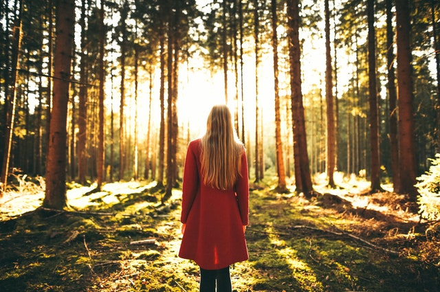
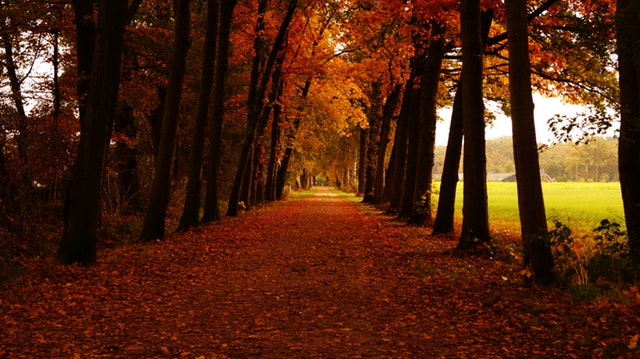

Hey nature, wake up!
Photography, Woman, Feeling, Graphics design |  24 Comments |
24 Comments | 4 Likes
4 Likes
24 Comments | 4 Likes
Oh yea! It is here! Part of the year, when the nature wakes up and starts to shine with every shade of green. What about putting this feeling into something durable.
And what about putting it together with a beautiful woman? The perfect combination of smallest details of every moment. This combination is the best one not just for men.
You should realize that beauty photos are moving the world. They are setting the trends for young girls, so your photos do not have to be just in man-magazines.
But now, lets talk about how to make an interresting one.
- light
- environment
- brightness
- sharpness
- point of view
- beautiful model
- ... and last but not least, a little bit of luck
Random Posts




Search Posts

Archives
All archives

Featured

Fog in the mountains
Beautiful photos on early wake-ups
Do NOT fear photography
Photography is not just about taking pictures. It is about all the emotions coming trought your body when you are pushing the trigger of your camera.
Live with your camera, do not just take pictures. Take emotions
Check out more
Tags
photography
snow
woman
music
portfolio
winter
start
cold
feeling
creativity
motivation